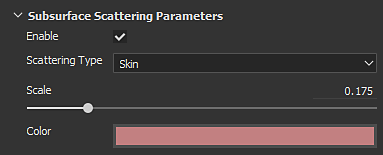
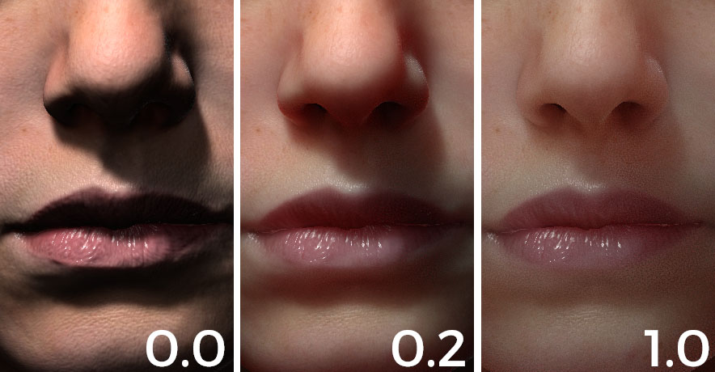
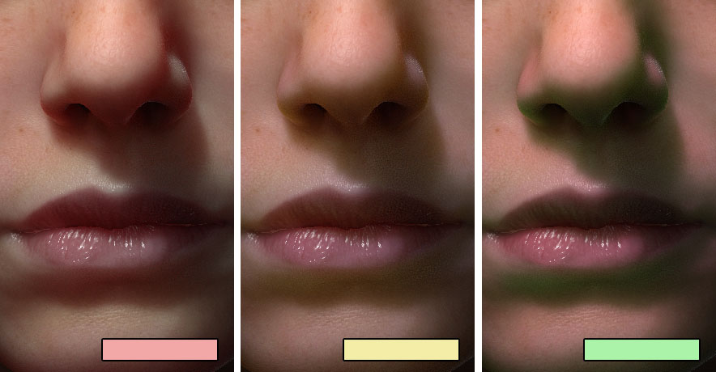
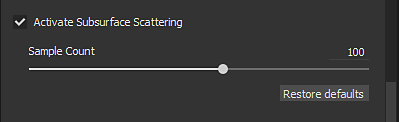
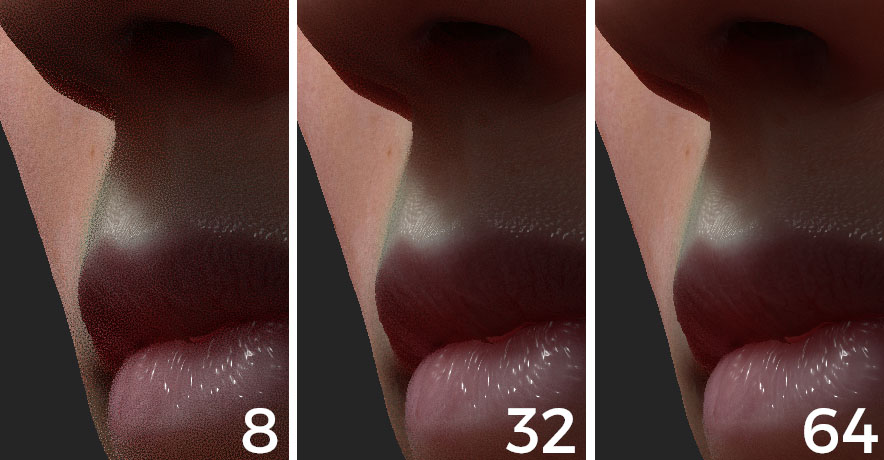

Setting
Substance 3D Painter real-time subsurface implementation is a screen-space subsurface scattering effect. The parameters to control it are explained in this page.
The current implementation is based on the "Approximate Reflectance Profiles for Efficient Subsurface Scattering" method published by PIXAR.
For examples of materials based on these parameters, see: Subsurface Material Type.

Available in the Shader settings window.
|
Setting |
Description |
|---|---|
|
Enable |
Activate or Deactivate the Subsurface Scattering effect on this shader/mdl instance. |
|
Scattering Type |
Defines the behavior of the light absorption in the material:
|
|
Scale |
Controls the radius/depth of the light absorption in the material. This parameter behavior change depending of the size of the mesh in the scene. Comparison between a scale of 0.0, 0.2 and 1.0 on a human sized head:  |
|
Color |
The color of light when absorbed by the material. Comparison between three colors :  |

Available in the Display settings window.
|
Setting |
Description |
|---|---|
|
Sample Count |
Controls the amount of samples that will be performed to generate the Subsurface blur in screen-space. More samples means less noise but will impact performances. Comparison between 8, 32 and 64 samples when looking close to a surface : 
Note
The amount of noise can also be reduced by enabling Camera settings without increasing the amount of samples.
|